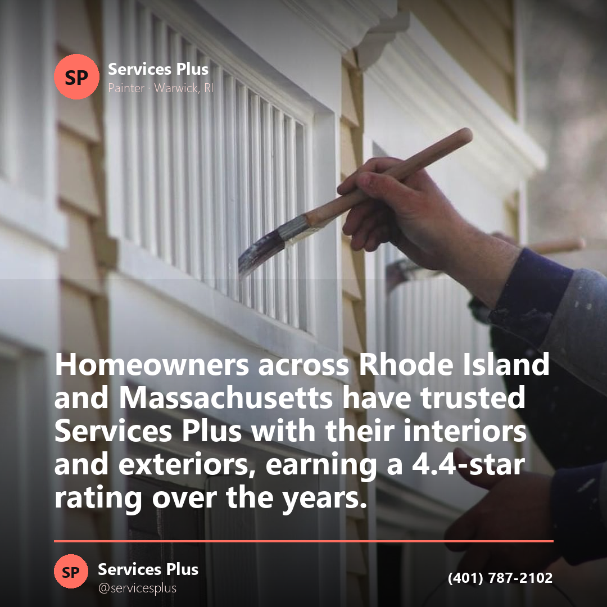
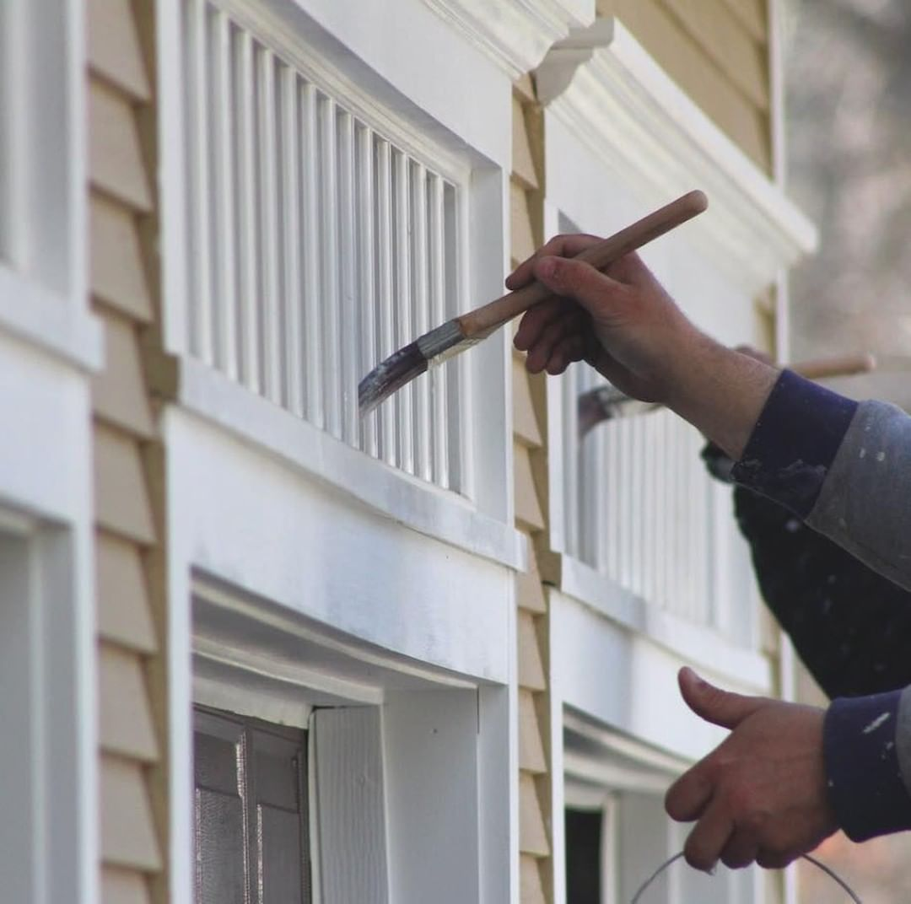

Reviews · Instagram
Homeowners across Rhode Island and Massachusetts have trusted Services Plus with their interiors and exteriors, earning a 4.4-star rating over the years. Thank you for trusting us with your home.
Services Plus is a residential painting and carpentry contractor on Kilvert Street in Warwick, working across Rhode Island and Massachusetts since 2002. Estimates are free.

A painter who also does carpentry can repair the wood before painting over it, rebuild the porch instead of masking it, and finish the basement rather than just coating the walls. Here is the whole list.
The outside of the house — siding, trim, and everything the weather gets at first.
Walls, ceilings and trim on the inside of the house, room by room.
Custom interior and exterior carpentry — the parts of a house you cannot buy off a shelf.
Help choosing color and finishes, room by room, before a drop of it goes on the wall.
Exterior surfaces washed down — on its own, or because paint does not stick to dirt.
Cabinets you already own, brought back instead of torn out and replaced.
Building a deck, or bringing back the one that has been out in the New England weather too long.
Screened porches put back in usable order for the summer.
Turning the space under the house into a finished part of it.
“Sometimes your dream kitchen or living room can't be found at a store. That's where Services Plus comes in. We provide custom interior and exterior carpentry services.”
Two things worth knowing before you take anyone's estimate, ours included.
Paint is easy to judge on the day it goes on and hard to judge three years later. That gap is what a three year warranty is for.
Services we proudly provide, in our own words: fully insured and licensed — worth confirming with anyone you let onto a ladder against your house.
Tell us what the project is — a room, the whole exterior, a deck, or a basement — and we will come look at it and price it. Helping our clients fall in love with their homes all over again.
(401) 787-2102Content